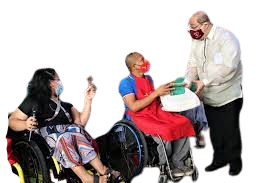

Homepage
Background
SIP
Gallery
The Problem

Our partner institution, SAKADAB, has encountered a number of problematic
situations especially on the financial end. This issue has affected many people
in the community in a number of ways. The lack of medical supplies is an example
as to why financial stability in the community, is important to address. Financial
troubles are necessary to solve immediately because it would eventually start to
grow and create more other significant problems in the near future. An institution
like SAKADAB should be taken care of because once a problem occurs, the whole community
will most likely be affected also.
Intervention
This is why we propose an online campaign and fundraiser project, which will help give exposure to
our partner community, while at the same time directly and indirectly alleviating their main problem
as an institution. One of the reasons why our partner institution has problems financially is because
one of their main income sources, donations and selling handicraft and baking products usually come with
more exposure, which sadly, our partner institution mostly lacks. With added exposure from social media,
we can help put our partner institution's name on the map while at the same time promoting their products
and advocacy. Fundraisers and fundraising events like gift card and food selling can also be done, in order
to give some financial aid back to a community that has been helping our PWD friends for over a decade now.
Thats great and all, but, how will this help the community in the first place? Well, we mentioned earlier
how the financial struggles of the institution can branch out into other problems in the future. Well, through
donations, funds collected from fundraising events, and community support, we will be able to put a stop
and prevent these future struggles before they even happen, while at the same time being able to increase
the quality of life in the SAKADAB institution itself. Through our project, we can also shed light on issues
such as dissability discrimination in social media, thus spreading awareness on an important issue that many
residents in the SAKADAB institution face.
Significance to the Institution
The project is important for the institution because it will be able to promote and shed
light on our partner institutions business and cause, while at the same time helping alleviate
the financial problems present in SAKADAB, along with the issues that have branched out from it
like the medical problems due to the lack of medical supplies present in the area. Through promoting
their institutions business and cause, we give them more exposure, which was the original desire
of SAKADAB president Mr. Ludivico Mascarinas Jr., while at the same time spreading awareness about
dissability discrimination in the Philippines, thus uniting the country as one productive unit in
helping to put a stop to dissability discrimination. Next, we also aim to improve the overall
sustainability of the partner institution, by increasing trust and teamwork within the residents
of SAKADAB. With trust and teamwork chemistry comes sustainability within the community. We can
also improve the overall quality of life within the institution itself, through donations and funds
earned from fundraising activities hosted throughout the school year. Lastly, we also aim to prevent
future problems that could branch out from the present financial problems of SAKADAB.
Significance to Us, 2B
The project is important to us, Group 2B, because the project will help us develop a sense of
urgency towards the problems not just of our partner institution, but the problems around us
present in our own community. As Junior High School students, we can learn more about being
problem-solvers or liberators in real-life, and beyond just essays and forms. We can learn how
to be liberators in times of crisis in the actual real-world this time. The project is also
important to us, because we believe that God sent us down to Earth in order to complete a certain
mission to help other people and to collaborate with our neighbors, peers, and fellow human
beings in times of crisis. Through this project, we become one with the community and we get
one step closer into completing this mission sent out by God. As Jesus said: "You must love
your neigbor as yourself".
Significance to the Public
Our project is important to the public in general because our project aims to spread awareness,
through social media, about not only our partner institution, but about exposing and shedding light
on issues such as dissability discrimination. This way, the public, or the general population living
inside and outside of Davao City and the Philippines, will receive more information about dissability
discrimination and how it affects PWD's in their daily lives. The information dissimination can be
done through infographics showing statistics, feature videos of our partner community, and general
updates on our social media pages and website.
About the Author, Zoe Macarulay
Zoe Macarulay is a 14 year old girl living in Davao City. She was born on the 15th of September 2008,
She is also an only child. She is an orchestra player, she currently knows how to play the viola and
the bass guitar. She takes an interest in photography, videography and editing she is learning all of
these in her free time. She is new to Ateneo and she is a student of Grade 9 Canisius and a member of Group 2B.